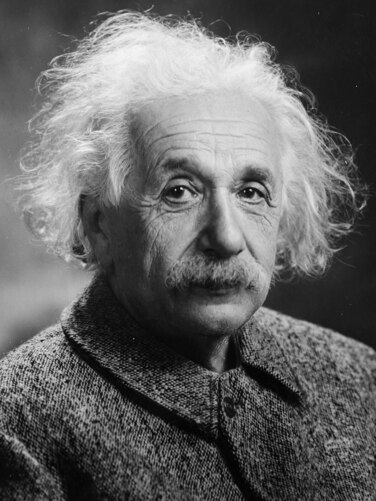

Альберт Эйнштейн
Альберт Эйнштейн (Albert Einstein) — один из величайших физиков в истории, чьи работы коренным образом изменили наше понимание пространства, времени, энергии и материи. Хотя он не формулировал законы сохранения в их классическом виде, его теория относительности объединила понятия массы и энергии, что привело к знаменитой формуле E=mc² и новому пониманию сохранения энергии.
Краткая биография Альберта Эйнштейна
Альберт Эйнштейн родился 14 марта 1879 года в Ульме, Германия, в еврейской семье. В детстве он не проявлял особых способностей, но с ранних лет интересовался наукой и математикой. В 1896 году он поступил в Швейцарский федеральный политехнический институт в Цюрихе, где изучал физику и математику. После окончания института Эйнштейн работал в патентном бюро в Берне, где в свободное время занимался научными исследованиями. В 1905 году, известном как «год чудес», он опубликовал четыре статьи, которые изменили физику. В 1915 году Эйнштейн завершил разработку общей теории относительности, которая описывает гравитацию как искривление пространства-времени. Эта теория стала одной из самых значительных научных революций XX века. Эйнштейн получил Нобелевскую премию по физике в 1921 году за объяснение фотоэлектрического эффекта, что стало важным шагом в развитии квантовой механики. Однако его работы по теории относительности оставались слишком революционными для Нобелевского комитета. В 1933 году, с приходом к власти нацистов, Эйнштейн эмигрировал в США, где продолжил работу в Принстонском институте перспективных исследований. Он активно выступал за мир, гражданские права и создание государства Израиль. Альберт Эйнштейн умер 18 апреля 1955 года в Принстоне, США. Его мозг был сохранён для научных исследований, а тело кремировано.